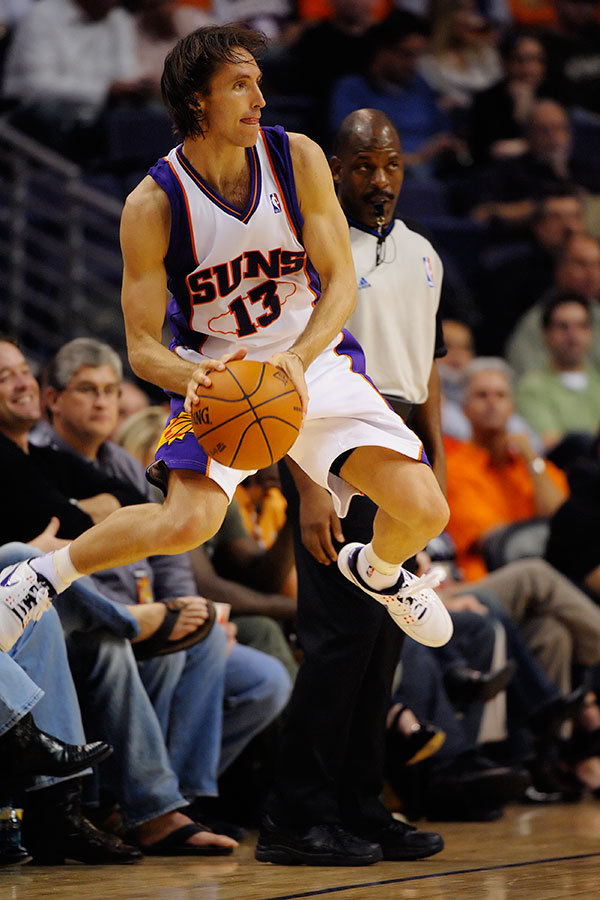
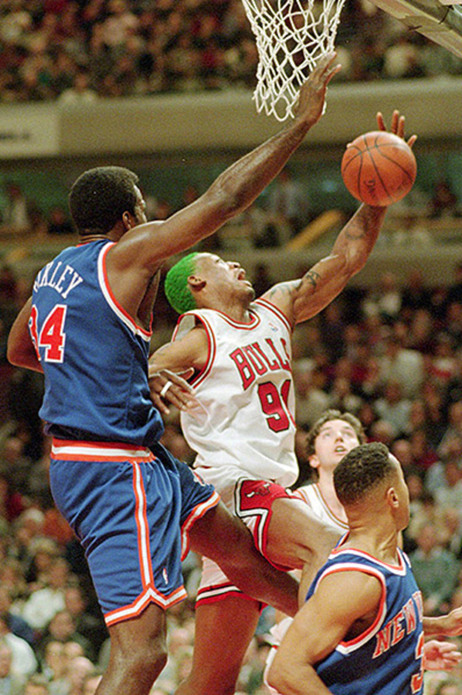

Welcome to the world of basketball - Your Ultimate Guide! Whether you're a seasoned fan or just getting started with the game, i'm here to give you information and go-to resources for everything you need to know about the game. Dive into the rich history, strategies, and excitement of this dynamic sport with us. Our mission is to provide comprehensive insights and knowledge that will enhance your understanding and appreciation of basketball. Basketball is a dynamic team sport played on a rectangular court, focusing on scoring points by shooting a ball through a hoop elevated 10 feet above the ground. The game emphasizes key fundamentals
Dribbling: Players use their fingertips to bounce the ball while moving, allowing them to maneuver around defenders and maintain possession. The dribble is a lethal tool for players. When used properly, the dribble can carve up defenses and lead to big numbers on the scoreboard. Some of the best dribblers are Kyrie Irving, Allen Iverson, and Jamal Crawford.

Shooting: Scoring points by accurately shooting the ball into the opponent's basket from various distances and angles, using proper shooting techniques such as balance, aim, and follow-through. Great shooters are often called pure shooters because they have a smooth, free-flowing shot or a soft touch. Some players think a pure shooter is naturally gifted or born that way. This is a misconception. Great shooters are made, not born. Two of the greatest shooters hands downs are Ray Allen and Stephen Curry.
Ray Allen a sharpshooter known for his smooth shooting stroke and clutch performances, Allen has hit 2,973 shots from beyond the arc in his career 2nd behind Steph Curry.
Passing: Transferring the ball between teammates to advance towards the basket or create scoring opportunities, employing chest passes, bounce passes, overhead passes, and more. Accurate passing opens up a world of possibilities on the court. When you master this skill, you become a playmaker who can create scoring opportunities for yourself and your teammates. By delivering precise passes to your teammates, you exploit gaps in the defense, leaving opponents scrambling to recover. Your teammates will have more open shots and better chances to score, making your team a formidable force on offense. Some of the best playmakers include Steve Nash and Magic Johnson.

Steve Nash a two-time MVP, Nash was known for his creativity, accuracy, and ability to deliver pinpoint passes that set up scoring opportunities for his teammates.
Rebounding: Securing possession of missed shots by grabbing the ball off the rim or backboard, crucial for both offensive second-chance opportunities and defensive stops. Rebounding is one of the most important phases of the game of basketball. Rebounding gives a team possession of the basketball, and each possession helps both a team's offense and their defense and ultimately helps a team win basketball games. Dennis Rodman was not very tall but is considered to be on of the best rebounders.

Dennis Rodman renowned for his tenacious rebounding and defensive skills, Rodman led the league in rebounding for several seasons and played a crucial role in multiple NBA championship teams.
Defense: Guarding opponents to prevent them from scoring, utilizing techniques such as man-to-man defense, zone defense, and shot-blocking. Defense begins as soon as the ball is lost. The player does not wait until he gets to the other end of the floor to begin to think about defense, when jump ball is thrown up defense should already be in motion.

Gary Payton known as "The Glove" for his defensive prowess, Payton was a relentless on-ball defender who often guarded the opposing team's best perimeter player.
Footwork is essential for agility and balance, enabling players to move efficiently on both offense and defense, execute pivots, and establish positioning for rebounds and shots. Practicing and refining footwork through drills and exercises helps players enhance their performance and contribute more effectively to their teams' success in basketball.